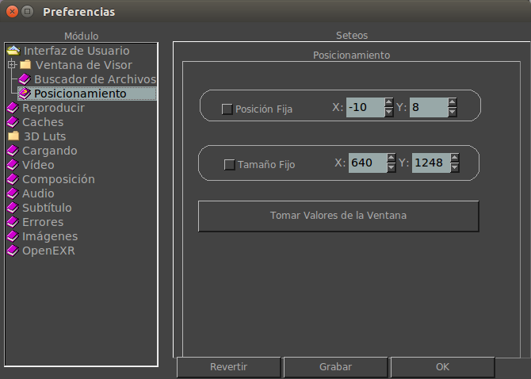

 |
Cuando está activa, aquí podés setear la posición en X y Y de la ventana principal de mrViewer. Cuando está activa, aquí podés setear el tamaño por defecto de la ventana principal de mrViewer cuando empieza. Este botón, cuando se lo aprieta, permite tomar los valores de la ventana actual y rellenar la Posición Fija y el Tamaño Fijo por vos. |